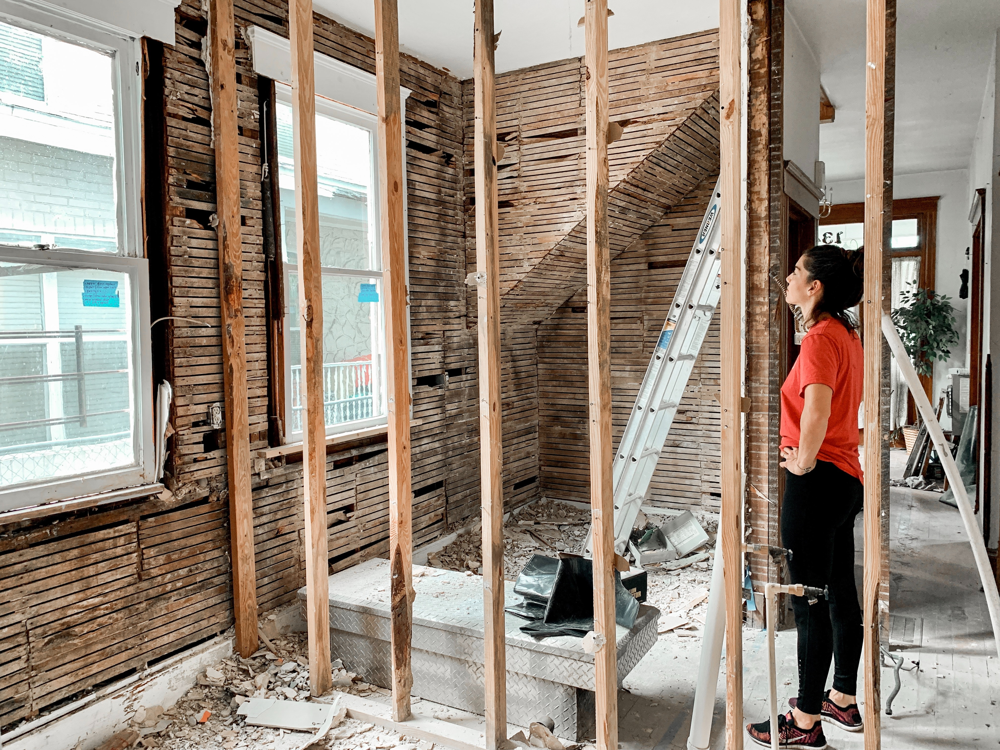

عن الشركه


يمكن الطريق وسائل النقل من سياراتٍ وشاحناتٍ ودراجاتٍ وغيرها من السير والتنقل بهدف قضاء الحوائج الهامّة أو الترفيهية ولنقل البضاعة وغيرها من الأهداف وتُعرَفُ هذه الطرق بالشوارع، وتخترق هذه الشوارع المدن والقرى، ومنها الشوارع الفرعية التي تقل فيها حركة السيارات فتكون حركة الأشخاص أكثر فيها، والشوارع الرئيسيّة التي تزدحم بكلّ أنواع المواصلات، ومن الشوارع ما هو ترابي وآخر معبدٌ أو مغطّى بالإسفلت.
رؤيتنا
يمكن الطريق وسائل النقل من سياراتٍ وشاحناتٍ ودراجاتٍ وغيرها من السير والتنقل بهدف قضاء الحوائج الهامّة أو الترفيهية ولنقل البضاعة وغيرها من الأهداف وتُعرَفُ هذه الطرق بالشوارع، وتخترق هذه الشوارع المدن والقرى، ومنها الشوارع الفرعية التي تقل فيها حركة السيارات فتكون حركة الأشخاص أكثر فيها، والشوارع الرئيسيّة التي تزدحم بكلّ أنواع المواصلات، ومن الشوارع ما هو ترابي وآخر معبدٌ أو مغطّى بالإسفلت. يمكن الطريق وسائل النقل من سياراتٍ وشاحناتٍ ودراجاتٍ وغيرها من السير والتنقل بهدف قضاء الحوائج الهامّة أو الترفيهية ولنقل البضاعة وغيرها من الأهداف وتُعرَفُ هذه الطرق بالشوارع، وتخترق هذه الشوارع المدن والقرى، ومنها الشوارع الفرعية التي تقل فيها حركة السيارات فتكون حركة الأشخاص أكثر فيها، والشوارع الرئيسيّة التي تزدحم بكلّ أنواع المواصلات، ومن الشوارع ما هو ترابي وآخر معبدٌ أو مغطّى بالإسفلت. يمكن الطريق وسائل النقل من سياراتٍ وشاحناتٍ ودراجاتٍ وغيرها من السير والتنقل بهدف قضاء الحوائج الهامّة أو الترفيهية ولنقل البضاعة وغيرها من الأهداف وتُعرَفُ هذه الطرق بالشوارع، وتخترق هذه الشوارع المدن والقرى، ومنها الشوارع الفرعية التي تقل فيها حركة السيارات فتكون حركة الأشخاص أكثر فيها، والشوارع الرئيسيّة التي تزدحم بكلّ أنواع المواصلات، ومن الشوارع ما هو ترابي وآخر معبدٌ أو مغطّى بالإسفلت.
مسؤلي HSGC
-
يمكن الطريق وسائل النقل من ما هو ترابي وآخر معبدٌ أو مغطّى بالإسفلت.
-
يمكن الطريق وسائل النقل من ما هو ترابي وآخر معبدٌ أو مغطّى بالإسفلت.
-
يمكن الطريق وسائل النقل من ما هو ترابي وآخر معبدٌ أو مغطّى بالإسفلت.